ביום שיא האתר מקבל את ערכת העיר מתוך contest.json (peakThemes): הכותרת PARIS CALLING, פס שלושת הצבעים, גוון התמונה וצבע ההדגשה. בשאר הימים האתר נשאר כחול, בלי שינוי. נתונים סינתטיים; Flight Deck; תנועה מופחתת לצילום.
בקשת הבעלים: "לשמור על הסגנון של האירוע". שלט הנורות PARIS CALLING על כרטיס קרם, הסרט האדום "יום שיא מכירות בזק", הספירה לאחור בכרטיס קרם, שקיעה (תמונת היום בגוון חם ושמיים ורודים-סגולים) והפוסטר של המארגנים ככרטיס. הנורות מהבהבות שלוש פעמים ונחות; בתנועה מופחתת: סטטי. הערכים: ערכת פריז של B (claude/final-look 06044f54).
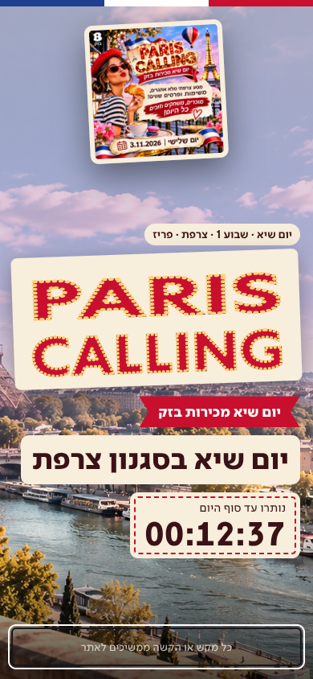
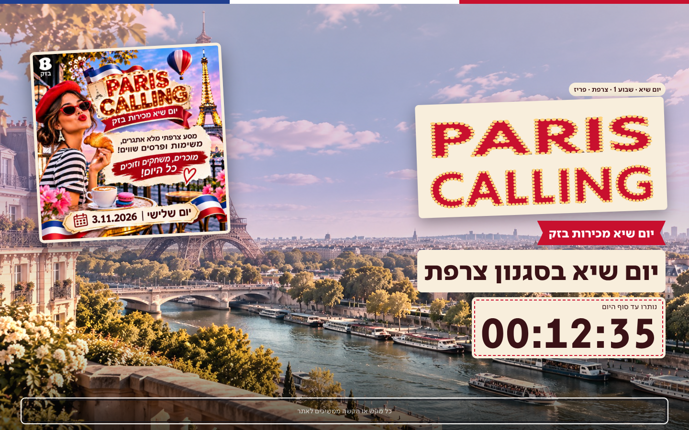
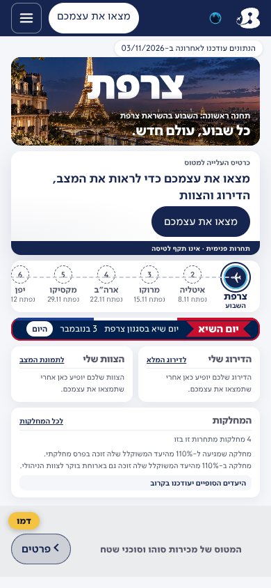
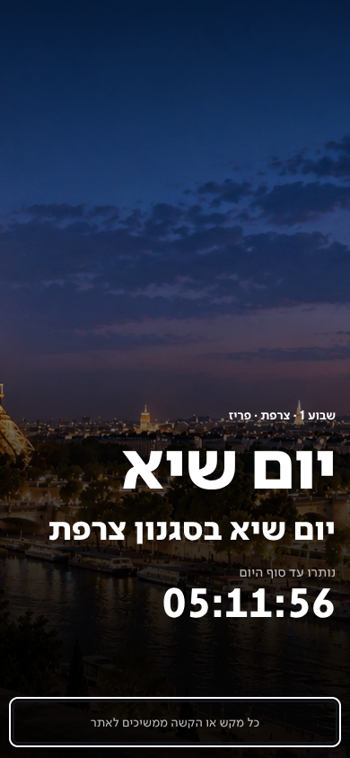
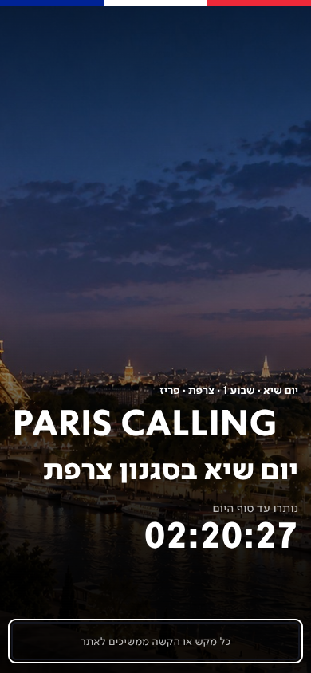
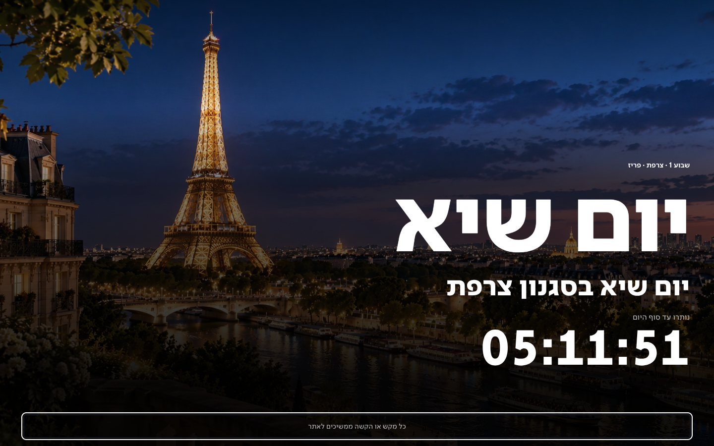
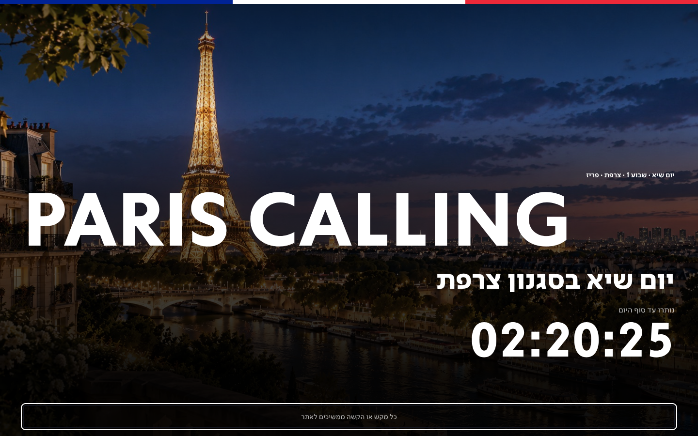
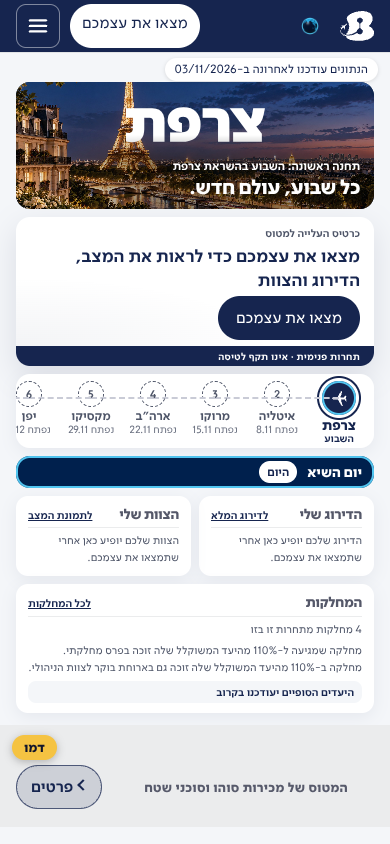
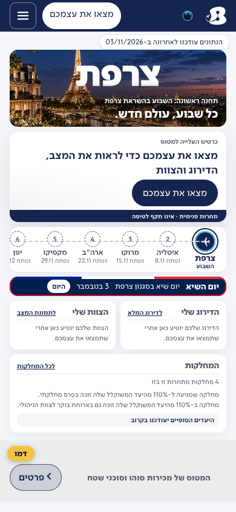
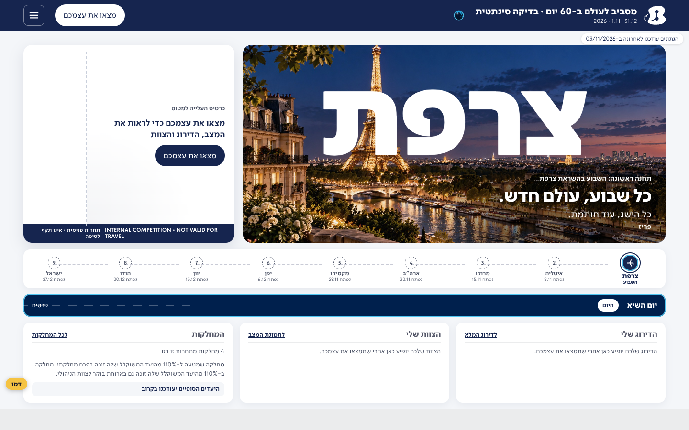
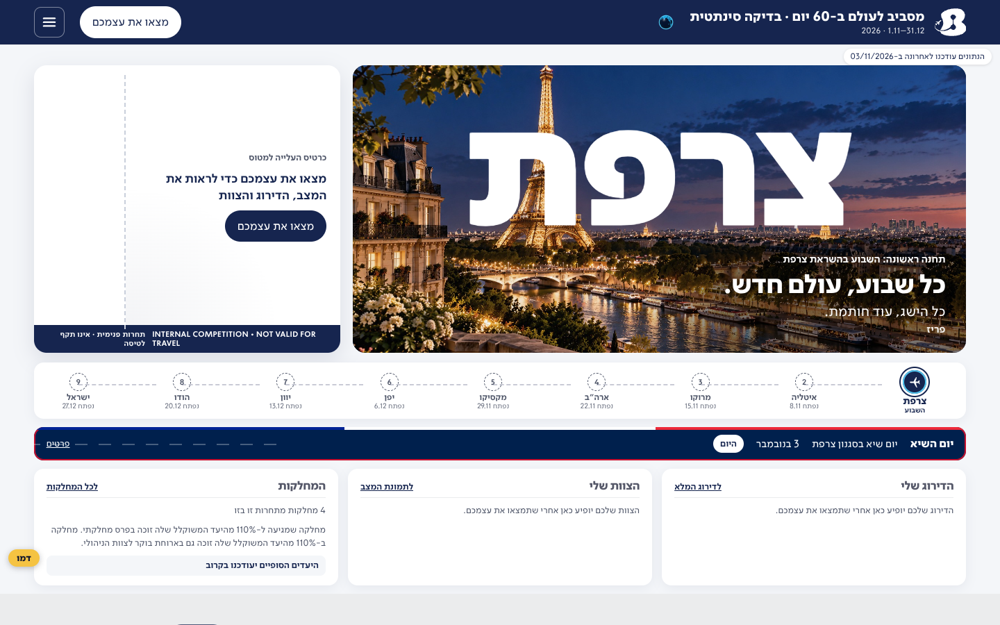